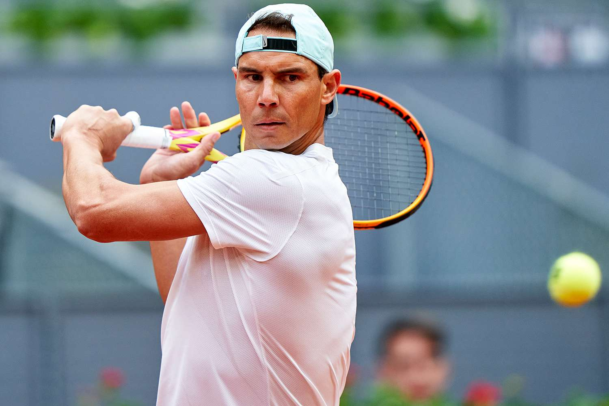
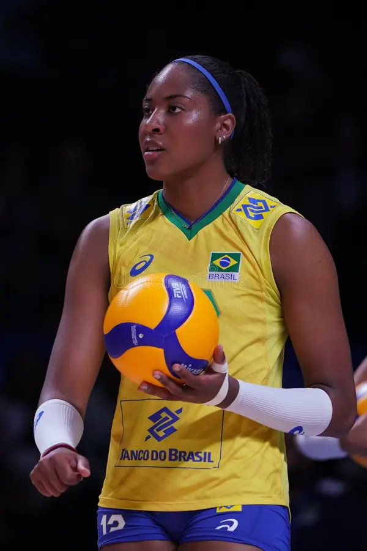

Sports I play
Soccer
Tennis
Volleyball
Some of my favorite players...
In soccer my favorite player is Ronaldo because he is known for being really good at all the positions in soccer. The position he plays most of the time is forward/striker. His penalty kicks are very impressive.
In tennis my favorite player is Rafael Nadal. He is a very impressive tennis player and can hit any ball the comes to him. Rafael Nadal is known for being aggressive and his forehand skills.

Volleyball is a sport I mostly play for fun but my favorite player is Ana Cristina de Souza. She is a very increadeble brazilian volleyball player and can take on any ball that comes to her. She is mostly known for her spikes.
